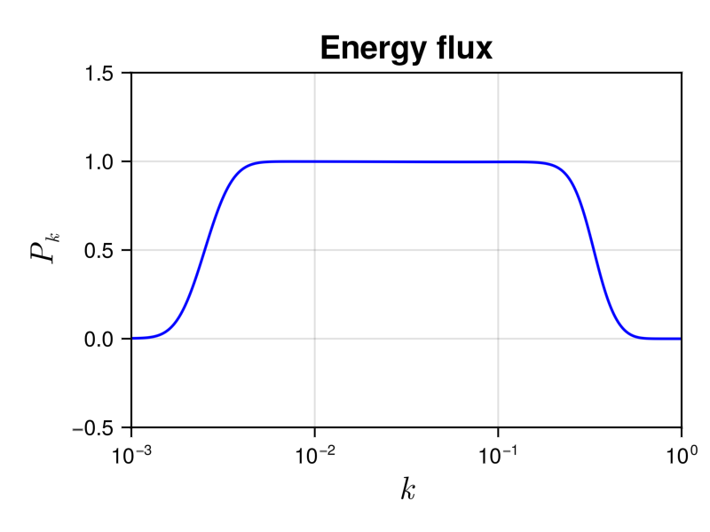
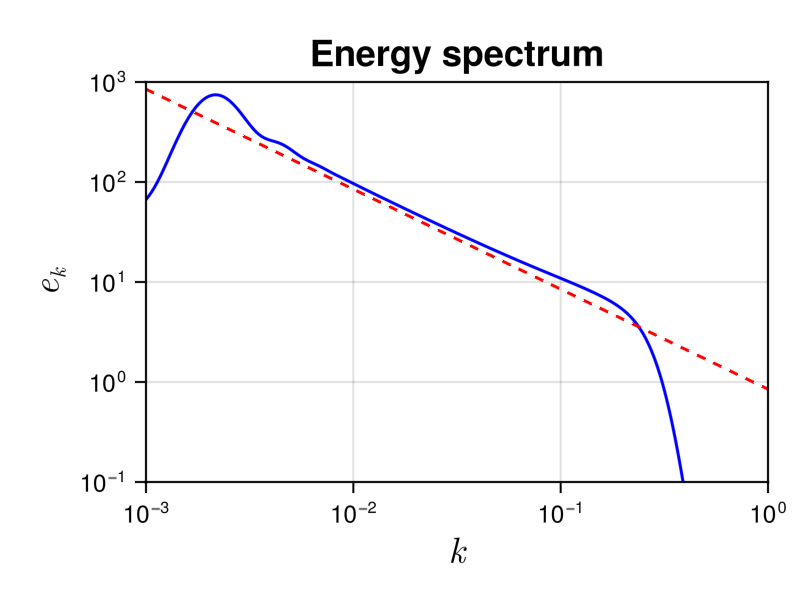

A simple tutorial to start
In this section, we explain how WavKinS works with a concrete example. To this end, we will use the solver for 2D acoustic waves. Here we explain how to launch a simple simulation to test the direct energy cascade prediction, characterized by constant energy flux to small scales and the steady energy spectrum
\[ e_k = 2\pi k \omega_k n_{\bf k} = \frac{4^{3/2} \sqrt{a c}}{3 \pi} ~ k^{-1}. \]
To this end, we use the script run/simple/RunSimpleEvolution_Acoustic.jl. For more informations about the solver, you can look at this section.
The solver is defined in src/physical_systems/Acoustic folder:
- The
basics.jlfile contains the dispersion relationω_Acousticand squared interaction coefficient appearing in the collision integralS_2DAcoustic. We also usually need methods to parameterize the resonant manifold, etc. - The
structure.jlfile contains the structure containing all necessary variables and methods for aAcoustic2Dsimulation (grid, waveaction spectrum, collision integral, time, etc). - The
collision_integral.jlfile contains the function [function St_k!(Run::Acoustic2D)] which compute the collision integral $St_{\bf k}$. For all solvers, the collision integral is [function St_k!(Run::StructureType)] whereStructureTypeis the structure of the simulation.
Run simple evolution
In this section, we explain the different part of the run/simple/RunSimpleEvolution_Acoustic.jl script.
Includes
The first part of the script
push!(LOAD_PATH, "../")
using WavKinS
using GLMakie;
GLMakie.activate!();
using TimerOutputsis to import modules. Here, we need WavKinS, GLMakie for plots, and TimerOutputs to test performances.
The module GLMakie does not work on some systems (clusters).
The lines
if Threads.nthreads() == 1
@warn "Set the number of threads by doing export JULIA_NUM_THREADS "
endwarns you in case you use only $1$ thread.
WavKinS is parallelized so you can use several threads on most modern computers, speeding up simulations. For example, to run the script with 8 threads, go to run/simple folder and run:
julia --project --threads 8 RunSimpleEvolution_Acoustic.jlconst to = TimerOutput()defines the timer for outputs to check the code's performance.
The time loop
To do the time advancement and manage the outputs and plots, we define the following function
function run_simple_evol(Run, Param, Tfinal)that take the Run, the simulation parameters, and the final time of the simulation as arguments. In the following lines
step_scheeme = Run.time_stepping
init_temporal_scheeme!(step_scheeme, Run, Param.dt)
tini = Run.t
tplotEvol = tini
tglobalEvol = tini
tsptoreEvol = tini
tspwriteEvol = tini
t = tiniwe define a shortcut for the time-stepping method and initialize time-stepping and time variables.
The constants of the theoretical prediction for the energy spectrum are defined here
V0GP = 3 * sqrt(Run.c / 2.0) / 4.0
if Run.name == "Acoustic2D"
Cd = 4^(1 / 4) * sqrt(Run.c) / (pi * V0GP)
Prefactor = Cd * sqrt(Run.a * Run.c)
xP = 1
iP = findfirst(x -> x >= 5e-2, Run.Nk.kk)
elseif Run.name == "Acoustic3D"
Prefactor = sqrt(3 * Run.c / (32 * V0GP^2 * π * (π + 4 * log(2) - 1.0)))
xP = 3 / 2
iP = findfirst(x -> x >= 5e-2, Run.Nk.kk)
else
Prefactor = 1.0
xP = 0.0
endNote that we also have implemented the 3D acoustic wave case. These constants are used to plot the theoretical prediction.
We start the time loop and stop it if we detect NaNs in the spectrum:
@time while t < tini + Tfinal
if any(isnan.(Run.Nk.nk))
@warn "We got NaNs. Stop the temporal loop"
break
endThe following lines advance the simulation by one time step.
@timeit to "Advance" advance!(step_scheeme, Run, Param.dt)
t = Run.tThe remaining of the function is for writing and storing outputs, and plotting:
@timeit to "Global quantities" if t >= tglobalEvol
get_global_diagnostics!(Run)
if Param.write_global
output_global(Run, Param.outputDir)
end
Energy = Run.diags.glob_diag["H"].out[end]
WaveAction = Run.diags.glob_diag["N"].out[end]
println("t =", Run.t, " H(t) =", Energy, " N(t) = ", WaveAction)
tglobalEvol += Param.tglobal
end
@timeit to "Storing spectral quantities" if t >= tsptoreEvol
store_spectral!(Run)
tsptoreEvol += Param.tspstore
end
@timeit to "Writing spectral quantities" if t >= tspwriteEvol
if Param.write_spectral
compute_spectral!(Run)
output_spectra(Run, Param.outputDir)
end
tspwriteEvol += Param.tspwrite
end
@timeit to "Plotting" if t >= tplotEvol
P0 = Run.diags.sp_outs["Pk"].sp[iP]
plot_energy!(Run; fig=figE, ax=axE)
plot_theo!(axE, kk, Prefactor * sqrt(abs(P0)) * kk .^ (-xP))
plot_energy_flux!(Run; fig=figP, ax=axP)
sleep(0.0001)
tplotEvol += Param.tplot
end
end
endPhysical system, numerical scheemes, and simulation parameters
We first define the wave action structure as follows
M = 1024
kmin = 1e-3
kmax = 1e0
Nk = wave_spectrum(kmin, kmax, M)where M is the resolution and kmin and kmax are the minimal and maximal wave vectors. Then we construct the run structure:
Run = Acoustic2D(Nk; a=1.0, interp_scheeme=WavKinS.lin_interp, time_stepping_scheeme=WavKinS.RK2_step)
kk = Nk.kk
λ = Nk.λHere, we have fixed the disperion length a=1.0, the interpolation method lin_interp and the time stepping metho RK2_step. We also make shortcuts for the wave vector grid kk and the logarithmic increment λ.
We define parameters of the forcing and dissipation, namely the dissipation wavevector kd, the power of the Laplacian operator used for dissipation lapPower, the middle wave vector of the forcing region kf, and the forcing width Δkf.
kd = 0.25 * kmax
lapPower = 4
kf = 2 * kmin
Δkf = (log(kmax) - log(kmin)) / 25We then define a localized forcing with log normal shape, and the dissipation coefficient
\[ f_k \propto \exp \left[ - \frac{1}{2} \left( 25 \frac{\log k - \log k_{\rm f}}{\log k_{\rm max} - \log k_{\rm min}} \right)^2 \right], \quad d_k = \left( \frac{k}{k_{\rm d}} \right)^8\]
with the following lines
@. Run.Nk.nk = exp(-0.5 * ((log(kk) - log(kf)) / Δkf)^2);
EE = energy(Run)
@. Run.FD.f = Run.Nk.nk / EE
@. Run.FD.D = (kk / kd)^(2 * lapPower)Note that the forcing is normalized such that the energy injection rate, computed numerically, is equal to one. The final time and the time step are
Tfinal = 10.0; # Final time of the simulation
dt = 0.0025 # time step of the simulationOutputs
We use the boolean
isrestart = false # set this to true if simulations uses a restartto start a new simulation, or to restart from the end state of an old simulation.
You can define the parameters for storing different outputs and the frequency for plots.
tplot = 0.1; # Plot every tplot times
tglobal = 0.1; # Compute, store and write global quantities every tglobal times
tspstore = 20000 # Compute and store spectral quantities every tspstore times
tspwrite = 0.1 # write spectra every tspwrite
outputDir = "./" #output directory
write_global = true #write global
write_nk = true #write wave action
write_Ek = true #write energy spectrum
write_Pk = true #write energy flux We create a simulations parameters container as follows
write_spectral = write_nk || write_Ek || write_Pk
Param = simulation_parameters(dt, tplot, tglobal, tspstore, tspwrite,
outputDir, write_global, write_spectral)
Run.diags.sp_outs["nk"].write_sp = write_nk
Run.diags.sp_outs["Ek"].write_sp = write_Ek
Run.diags.sp_outs["Pk"].write_sp = write_Pk If isrestart=false, initialize the outputs. Otherwise, we load the spectrum in the simulation file to restart:
if ~isrestart
get_global_diagnostics!(Run)
init_IO(Run, Param.outputDir)
if Param.write_global
output_global(Run, Param.outputDir)
end
if Param.write_spectral
compute_spectral!(Run)
output_spectra(Run, Param.outputDir)
end
else
load_spectrum(Run, Param.outputDir)
get_global_diagnostics!(Run)
compute_spectral!(Run)
endBefore running the simulation, we compute and print initial wave action and energy:
println("Run in resolultion M=", M, " with λ=", Run.Nk.λ)
println("Total wave action =", Run.diags.glob_diag["N"].out[end])
println("Total energy =", Run.diags.glob_diag["H"].out[end])Simple plots and start the simulation
You can plot the energy spectrum or the energy flux by adapting this part of the script:
figE, axE = plot_energy!(Run; ylims=(1e-1, 1e+3))
figP, axP = plot_energy_flux!(Run, ylims=(-0.5, 1.5))
display(figP) # figE (figP) if you want to plot energy spectrum (energy flux)We run the simulation by calling the time loop function as follows
run_simple_evol(Run, Param, 0.0) # Good to run first to measure time properly
reset_timer!(to)
run_simple_evol(Run, Param, Tfinal)You can save energy spectrum and energy flux plots at the end of simulation with
save("tutorial_energy.png", figE)
save("tutorial_flux.png", figP)The outputs are saved in WKE_Acoustic2D_data.nc.
Analysis
Running the script should display the temporal evolution of the energy spectrum or the energy flux. At the end of the simulation the energy flux look like this

We see a plateau in the inertial range kf $< k <$ kd, whose height is equal to the energy injection rate, which is one. It corresponds to a constant energy flux to small scale. In the dissipative range $k >$ kd, the energy flux tends to zero, meaning that the collision integral conserves the energy.
We show the energy spectrum in the following figure

It allows to compare it to the theoretical prediction $e(k) = \frac{4^{3/2} \sqrt{ac} }{3\pi} k^{-1}$, shown with a dashed line. We see a good agreement in the inertial range.
Performances
At the end of the simulation, you can look at the perfomances of the code by using
println(to)which displays a detailed statistical analysis of time and memory usages of the different functions:
34.288965 seconds (913.48 k allocations: 105.154 MiB, 0.04% gc time)
────────────────────────────────────────────────────────────────────────────────────────
Time Allocations
─────────────────────── ────────────────────────
Tot / % measured: 34.3s / 99.9% 105MiB / 83.6%
Section ncalls time %tot avg alloc %tot avg
────────────────────────────────────────────────────────────────────────────────────────
Advance 4.00k 33.3s 97.3% 8.33ms 48.1MiB 54.7% 12.3KiB
Plotting 4.00k 378ms 1.1% 94.6μs 32.6MiB 37.1% 8.35KiB
Global quantities 4.00k 297ms 0.9% 74.3μs 1.78MiB 2.0% 466B
Writing spectral quantities 4.00k 261ms 0.8% 65.3μs 5.42MiB 6.2% 1.39KiB
Storing spectral quantities 4.00k 2.16ms 0.0% 541ns 24.5KiB 0.0% 6.27B
────────────────────────────────────────────────────────────────────────────────────────We see that the simulation was completed in $\simeq 34.3$ s and has used $\simeq 105$ MiB of memory.
TimerOutputs is very useful to find perfomances issues in julia's codes.